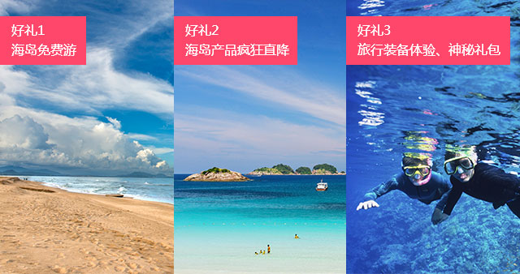

潜水Tips
１． 阴天、雨天或风较大的天气都不适合浮潜，因为海浪主要来自风力，通常阴、雨天的风都会较强且气温较低。风强浪大时，不仅浮潜非常不适，亦会影响体能。 ２． 浮潜时尽量穿长至膝盖的短裤和长袖的衣服，防晒，防刮伤，避免给人体造成不必要的伤害。 ３． 没有浮潜经验的朋友一定要穿救生衣，保障人生安全。 ４． 下水浮潜时应注意海底生物，比如水母、海胆、海鳗、炮弹鱼等等。 ５． 浮潜的时候建议自备手套，一是方便抓东西，二是在靠近礁石需要扶住或稳定身体的时候不会被礁石上的锋利物刮伤。 ６． 女士建议下海前盘紧头发，以防遮挡视线或者避免头发缠绕脖颈导致窒息。
-

Fun享夏日 倾听·海之音
海洋主题线下分享秀 教你如何玩转海岛 诚邀海洋生态保护者，加入海岛旅行团；海岛产品疯狂直降，再享免单礼；活动现场超酷旅行装备体验，送神秘礼包。加入驴妈妈潜水活动群即可参与活动！